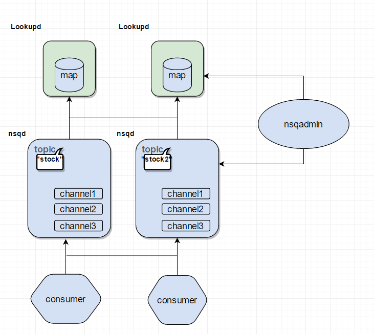

NSQ说明
NSQ是一个分布式的实时的消息队列,基于GO语言开发,它的分布式是无中心节点的结构,据说是高可用,上亿的消息毫无压力，并且部署非常简单，之前项目里也有用，没详细读过代码，下面来说下NSQ的结构和实现
NSQ的组成部分
主要由以下三个daemon进程组成。
- lookupd
维护nsqd节点以及他的topic和channel,方便client可以获取nsqd,也就是nsq里面的Producer
|
|

这是自己阅读源码理解画的流程图~
lookupd里面的map是代表RegistrationDB的一个结构，代表所有nsqd节点上的topic和channel。在nsqd上面创建的topic和channel都会同步到lookupd的这个结构里面。大意可以通过理解下流程图
- nsqd

- nsqadmin
基于web的一个可视化的监控页面，可以实时查看队列消息以及各节点信息

NSQ消息流向
类似这种有GC的语言不用管理内存一般的程序不用关心内存这个问题相对来说轻松了许多。不过尽量还是要关注下这块，及时释放掉对向对内存的持有

这是一个消息从topic到consumer的一个消息流向图。
topic和channel默认的消息队列(channel)有一个golang基于内存的channel另一个则是一个基于文件系统的FIFO磁盘队列。后一种为了解决前一个channel满的时候的备胎，哈哈~~，默认是基于文件的，另外还有一种topic名字前缀为#ephemeral时这个备份的内存就基于内存了(长度为0的channel)，这就是nsq支持的三种channel发送给
consumer的消息也分为两种，一种是in-flight(在处理中,已经发送给consumer)和deferred(延迟消息,还有一个优先级)消息。消息保存在以消息id为key的map里,在和consumer交互的时候都是有ACK(“OK”)回包,所以收到ACK包后会从in-flight字典中移除，同样延迟消息到时后同样会被移除掉
通信协议
说下nsqd和lookupd和consumer之间的通信的消息格式,每个服务都监听两个端口，一个用来支持短链接http，另一个是长链接tcp实现通信需求
- http
http协议就不讲了，基本都是http的
get post
tcp
client&lookupd to nsqd
12345678type Command struct {Name []byteParams [][]byteBody []byte}//PUB topicName\n7msgtest"//名称+空格分格符+参数(多个以空格分开)+"\n"+Body长度+Body内容nsqd to client
12345[x][x][x][x][x][x][x][x][x][x][x][x]...| (int32) || (int32) || (binary)| 4-byte || 4-byte || N-byte------------------------------------...size frame ID dataframe ID类型:
12345const (frameTypeResponse int32 = 0frameTypeError int32 = 1frameTypeMessage int32 = 2)lookupd to nsqd
12345[x][x][x][x][x][x][x]...| (int32) || (binary)| 4-byte || N-byte----------------------size data